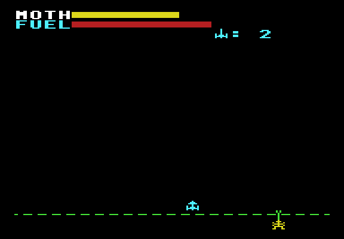
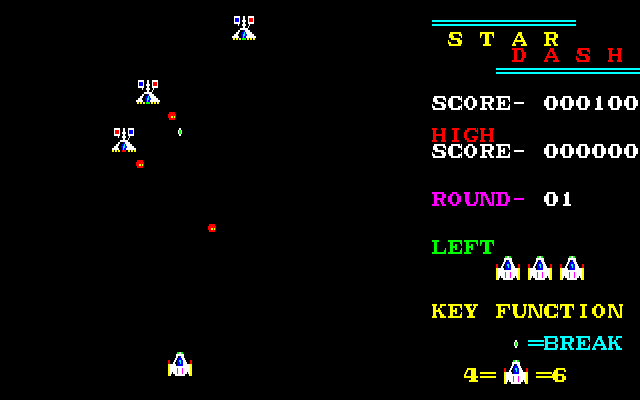
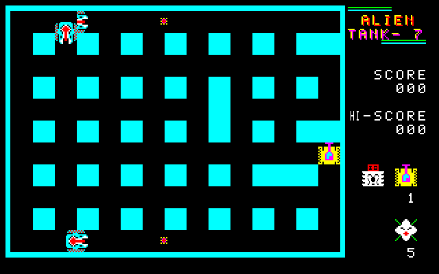
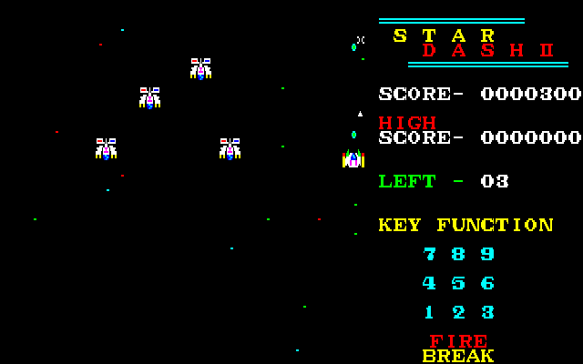

1982
SPACE MOTH FIGHTER
宇宙蛾ルイジンと、地下から舌を伸ばすアツカを相手に戦う固定画面シューティング。中学2年のときの作品です。
▶ PLAY
1983
STAR DASH
ワープ戦闘機 "F-W77" で敵母星をめざすシューティング。1ラウンドは CRUIZER との撃ち合い、隕石帯、敵母星前の3シーン。
▶ PLAY
1984
ALIEN TANK-7
迷路の中で戦車 "FM-84" を操り、ALIEN のボス "フラワン" と化けた戦車たちを撃つ。捕まった "DAN" も助け出そう。
▶ PLAY
1985
STAR DASH II
8方向に動ける続編。敵は20種類以上、全40面。5面ごとにプラズマ・ボールで敵母船を狙うボーナス・ステージがあります。
▶ PLAY